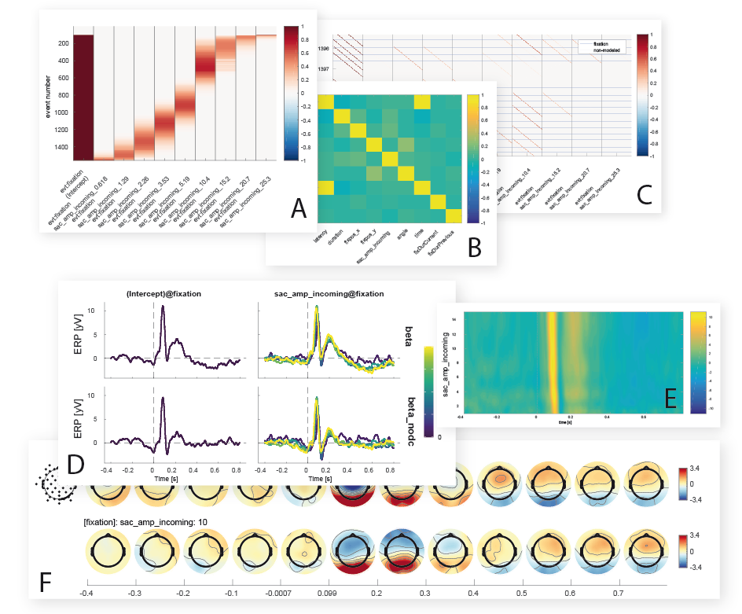

A toolbox for deconvolution of overlapping EEG signals and (non)-linear modeling
- Linear deconvolution
- Model specification using R-style formulas (“EEG~1+face+age”)
- Programmed in a modular fashion
- Regularization using glmnet
- Temporal basis functions (Fourier & Splines)
